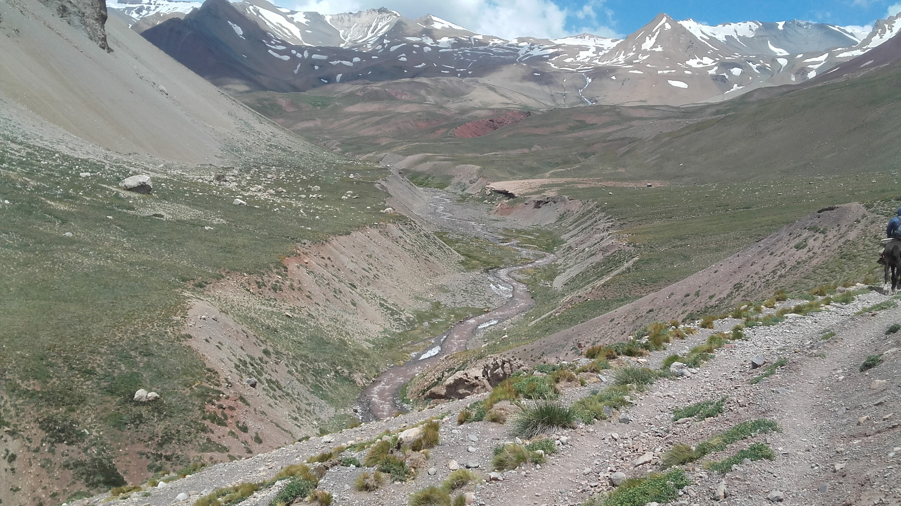
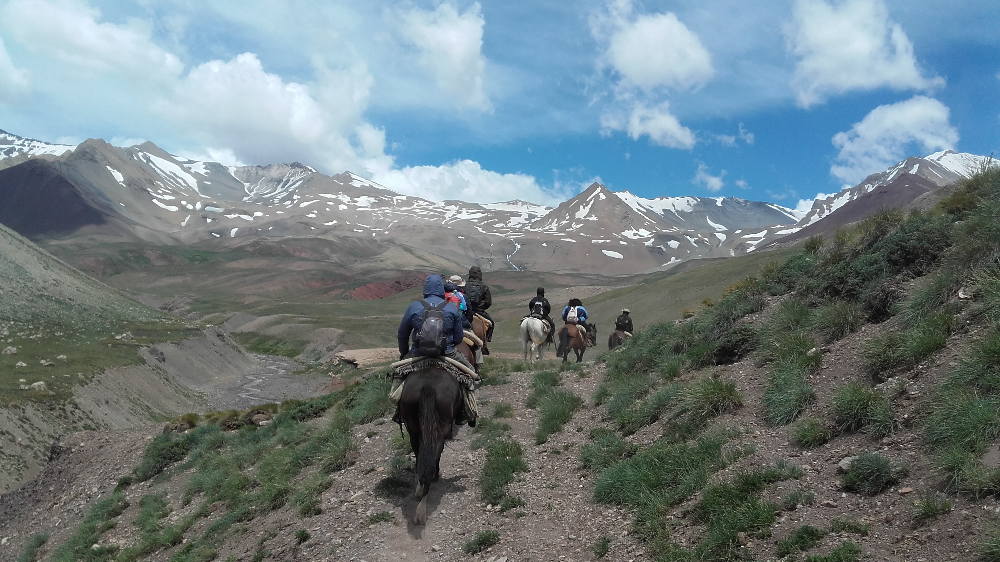
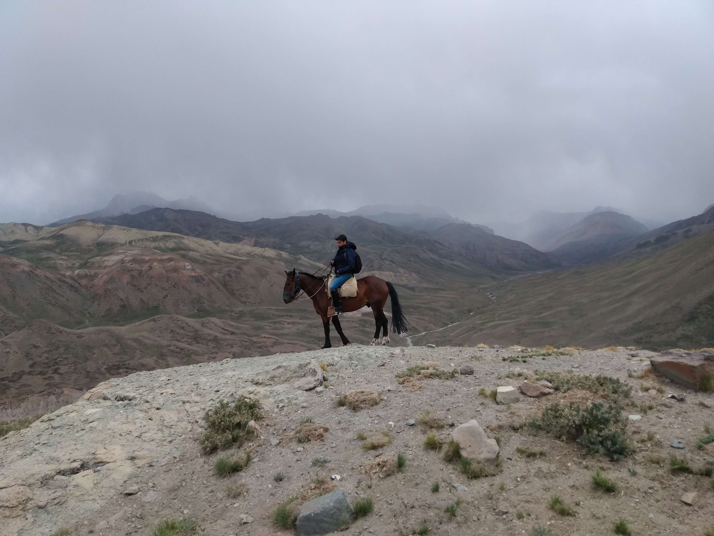
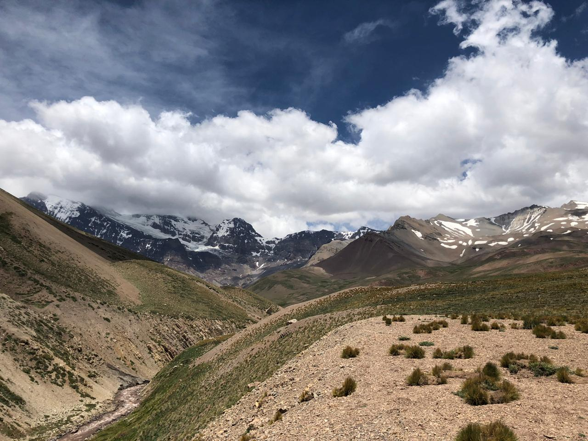

Día 1
Manzano histórico - Campamento "El Origen"
Recepción en el campamento base "El Origen" a su llegada. A partir de este momento comenzarán a disfrutar de la expedición con todos sus actores: guías, baqueanos y gauchos.
Se brindará la primera charla de coordinación y ajustes y se les asignará un lugar en el paraje para acomodarse y pasar la noche.

Por la tarde hay programada una caminata guiada por los puntos de interés de la comuna: el paso Histórico del General San Martin por el Manzano Histórico, visita al museo de Ciencias Naturales regional y al monumento al General San Martin llamado “Retorno a la Patria”.
También recibirán una reseña histórica del paso El Portillo, la Campaña de los Andes y sus pasos, el Cristo de la Hermandad y la Plaza de Artesanos. Regreso al Origen para participar de la cena de bienvenida. Fin de los servicios.
Día 2
Campamento "El Orígen" - Scaravelli
El día comienza temprano con el amanecer, un desayuno de campo y mate que acompaña la mañana y hace hermandad entre los participantes, baqueanos y gauchos.
Preparamos el equipaje y la carga y nos reunimos para tener una charla y repasar todos los temas de importancia: seguridad, estado físico, asignaciones etc.

A la hora prevista nos trasladamos hasta el refugio Scaravelli, un camino en ascenso constante hasta el Refugio de Gendarmería Nacional Argentina donde presentaremos la documentación y daremos aviso de paso. A medida que el grupo termina con el trámite dispondremos de 30´ para un almuerzo ligero.
En los corrales, los baqueanos nos esperan para asignarnos el caballo y la montura. Una vez preparados y montados a los caballos comenzaremos el ascenso hasta el Refugio Scaravelli ubicado a 3200 msnm. Es una cabalgata relajada para la adaptación a la montura y caballo. Al llegar al refugio tendrán tiempo para ver la actividad de los gauchos y baqueanos, el manejo de los caballos y mulas, escuchar sus conversaciones, sus historias, un verdadero clima de hermandad y tradición.
Nos encontramos rodeados de caudalosos arroyos y una vista del Valle de Uco que se pierde en el horizonte. Un fuego y el aroma a comida indica que el día va terminando. La preparación del refugio para cenar y dormir es la última actividad del día. Primera noche de adaptación en la altura. (el refugio cuenta con camastros)
Día 3
Scaravelli - La Olla
La actividad de este día comienza bien temprano con el amanecer. Al despertar deberán alistar sus pertenencias y equipos y presentar la carga.
El desayuno será en el refugio. Antes de salir habrá un repaso físico y médico, una introducción sobre la expedición, sus cuidados y la seguridad.

Asignación de los caballos y monturas. Una vez preparados se dará comienzo a la cabalgata con destino al Portillo Argentino a 4300 msnm.
El camino nos lleva a nuestra primera parada llamada Yareta. Aquí nace una vertiente de agua y un mástil con la bandera argentina conmemorando el cruce, el agua surge desde la entraña de la montaña dando inicio al caudaloso Arroyo Grande.
Un largo sendero en ascenso nos lleva al histórico Portillo Argentino. Al llegar realizaremos una breve parada para apreciar este punto frontal de la cordillera, habrá tiempo para sacar fotos. Revisamos las cinchas de la montura y a la voz del guía montaremos y daremos comienzo al empinado y zigzagueante descenso por un angosto sendero que nos llevará hasta El Real de la Cruz La Olla.
Una jornada exigente en todos los aspectos, la vista es imponente y gratificante, cumplido el objetivo de una de las jornadas más difíciles. Llegamos al campamento para estirar las piernas y descansar, asignación de los lugares para dormir. Reponemos energía con un buen fuego y una rica cena. Al atardecer el valle se transforma en un planetario, a simple vista se aprecia la belleza de las estrellas, de las galaxias, el cosmos, el infinito mismo.
Día 4
La Olla - Contrera
Este día comienza temprano, luego de alistar nuestras pertenencias, equipo y carga se servirá el desayuno una charla del día por venir, la seguridad y las dificultades del camino de este día, cruzaremos el caudaloso rio Tunuyán.
Nos dirigimos por un camino serpenteante, profundos cañones, caudaloso arroyo y una vista única de las cordilleras, el esplendor de La Olla y del Real de La Cruz, transitando por estos históricos caminos saldremos a una gran planicie donde la vista se pierde en el infinito.

Rodeados de montañas, del caudaloso y ruidoso Rio Tunuyán y el Refugio Real de la Cruz, una gran construcción de piedra en un lugar estratégico para el cuidado de nuestra soberanía.
El refugio Real de la Cruz fue construido en 1950 por mandato del presidente General Juan D. Perón, el Ejército Argentino construyó un cuartel recubierto en piedra de dos plantas de 2400 m2, todos los materiales se llevaron a lomo de mula. Se realizará un acercamiento para apreciar este bello lugar mientras los gauchos y baqueanos revisan el rio para verificar el cruce seguro.
Luego de atravesarlo nos dirigimos por un camino muy bello y vistoso, los caballos en fila india y a tranco relajado, se siente la conexión con el paisaje y los elementos, el verde de las praderas contrastan con los colores montañosos, las formas caprichosas de las montañas, la fauna y la flora despertarán toda su curiosidad. Cabalgaremos a 4200 msnm por un suelo marino que data de 30 millones de años, haciendo todo esto una experiencia única. Siguiendo por el camino nos lleva hasta el refugio Contrera, donde tendremos tiempo libre, para acomodarnos.
El refugio Contrera se encuentra en un majestuoso paisaje, podrán observar antiguos puestos de vigilia, un arroyo que nos brinda agua de los glaciares eternos de la cordillera, un gran fogón invita a juntarnos a su alrededor para contar las experiencias y anécdotas, acompañado de una rica y confortable cena, un muy buen vino para brindar y dar por terminado este largo día.
Día 5
Contrera - Portillo Piuquenes, Frontera Chilena - Contrera
Este día comienza con un rico desayuno. Los gauchos arrancan muy temprano para alistar el campamento y los caballos. Una vez preparados saldremos y daremos comienzo a un largo camino hasta el Portillo Chileno.
El sendero y las montañas toman formas y colores únicos, huellas de la erosión del agua y el viento que forman un profundo cañón, la vista del Cerro Palomar, el Cerro Mil Hojas, el Cerro Marmolado, Cerro San Juan con su vistoso glaciar formado por millones de años que cubre toda su cima.

Esta parte del camino tiene como atractivo El Caletón, una formación natural de piedras compactada, una silueta muy particular. Desde aquí a la distancia se puede apreciar el frente de las majestuosas montañas que le dan forma al Portillo Chileno.
Un camino más exigente en ascenso constante nos lleva hasta la cima del Portillo Chileno. Al llegar a la cima a la vista se encuentra el monolito que divide la frontera entre Argentina y Chile, es un lugar para expresar emoción, este es un paso fronterizo histórico, el silencio se adueña del lugar, el mismo silencio que nos acompañó durante todo el camino, surgen las ganas de festejar.
Un llamado de reunión para un merecido brindis, sacar fotos y pasar un bello momento. Un almuerzo ligero para reponer energías y al término nos alistamos para emprender un descenso por el camino, el mismo utilizado por el Libertador General San Martin y sus soldados después de liberar Chile y Perú, la ruta reconocida como Retorno a la Patria, una jornada agitada y extenuante.
Llegados al refugio disponemos de tiempo libre para descansar y más tarde un gran fogón nos invitará a su alrededor para compartir la cena. El andar hasta aquí deja una experiencia vivencial e espiritual única y muy rica de bellos momentos, una huella para toda la vida. Una rica cena y dar por terminado el día.
Día 6
Contrera - La Olla
Este día es muy tranquilo es muy importante relajar el cuerpo y la cabeza, alistaremos el equipaje y la carga, al término tomaremos el desayuno, una charla informativa para el regreso.
Salida hacia La Olla acompañados de una vista sorprendente. A lo lejos se ve el Volcán Tupungato a 6570 msnm, el más colosal de toda América, montañas y picos nevados, arroyos caudalosos que con el susurrar del viento generan música ambiental.
Liebres se ven y corren por las praderas, colibríes y jilgueros de montañas acompañan en nuestro andar, a lo lejos también rebaños de llamas y, si la suerte está de nuestro lado, podremos avistar el vuelo de algún majestuoso cóndor.
Alegar al Rio Tunuyán nos despide del valle El Real de la Cruz La Olla, a lo lejos dejamos atrás las grandes paredes montañosas que se elevan a más de 6000 msnm. Llegada al refugio La Olla, resto de la tarde libre. Terminando el día una rica cena para reponer energía.
Día 7
La Olla - Manzano Histórico – Campamento "El Origen"
El día comienza temprano con el amanecer, luego de desayunar nos preparamos para emprender la salida de La Olla, retomando el sendero por ruta Sanmartiniana y el emocionante ascenso al Portillo Argentino.
Sólo por el motivo de regresar invade la emoción, los caballos y mulas saben que regresamos y su tranco se torna más largo, su andar y sus movimientos son más asertivos por el ascenso empinado.

Nuevamente estamos en la cima del Portillo argentino. Por delante una vista increíble, un descenso suave y placentero. El sendero se hace más ancho se presta para cabalgar a la par de un compañero y charlar hasta el refugio de Scaravelli.
Llegados al corral del refugio, desmontaremos y dejaremos los caballos, nos despediremos de los gauchos y baqueanos por el momento.
El traslado nos espera y nos llevará hasta el Refugio de la Gendarmería Nacional Argentina para realizar el trámite de regreso. Seguimos por el camino en constante descenso que nos llevará hasta El Origen, al llegar nos asignarán lugares para descansar y tomar una confortable ducha. Por la noche un fogón de despedida con los guías, gauchos y baqueanos, los agasajaremos con empanadas, vino y una rica carne al asador. Brindis de despedida. Al término podrán descansar en las carpas asignadas.
Día 8
Campamento "El Origen" - Manzano Histórico
Al despertar les ofreceremos un desayuno de campo y los despediremos hasta la próxima. Fin de los servicios.

Alimentos detallados para todo el viaje
Desayuno
- Pan casero
- Galletas caseras
- Mermeladas caseras
- Dulce de leche casero
- Manteca
- Frutas de estación
- Frutos secos
- Cereales
- Mate, café, leche, té y jugos
Almuerzo
- Sandwiches
- Pan casero, milanesa de carne, pollo, atún y fiambres
- Frutas de estación
- Cereales
- Frutos secos
- Golosinas
- Chocolates
- Jugos y agua
Cena
- Carne Asada
- Carne a la cacerola
- Guisados
- Pastas
- Vegetales asados
- Ensaladas
- Pan casero
- Quesos y fiambres
- Frutas de estación
- Chocolates
- Vinos, jugos y agua